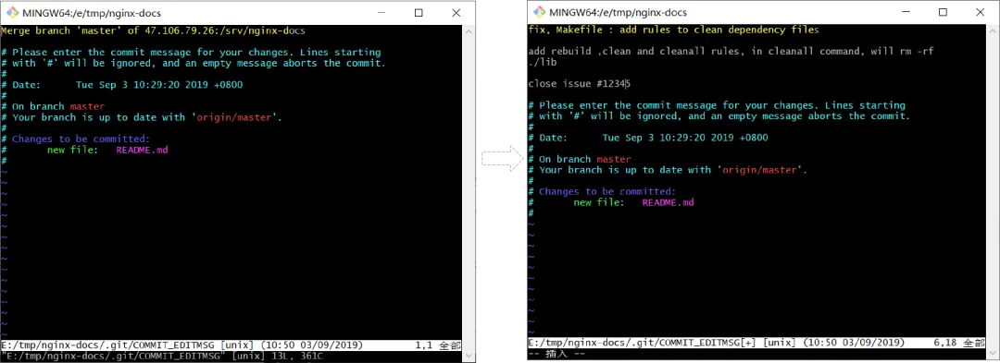

如何优雅地使用 git commit 命令
HaoTian · 2024-10-19 14:22:47
01 git commit 的基础
在 Git 中，"提交"是一个指代对文件更改进行记录的操作。每次提交都为当前项目的状态创建一个新的快照。提交的主要目的是让开发者可以在需要时查看、恢复或比较项目的历史版本。
Git 将每次提交视为项目在某一时刻的完整快照，而不是差异。每次提交保存的是当前项目的所有文件的状态，当你查看历史提交时，你可以看到当时的文件内容。快照使 Git 能够高效地管理各个版本的文件。
版本控制是管理文件变更的一种系统。在软件开发中，版本控制允许团队协作，追踪和记录每一次的更改。使用 Git 进行版本控制，可以实现以下目标：
- 协作：多位开发者可以同时对代码进行更改，并通过合并提交来整合这些更改。
- 历史记录：可以随时查看项目的变更历史，了解每次提交的内容、时间和作者。
- 恢复：在出现问题时，可以快速恢复到先前的某个版本。
- 分支管理：Git 允许创建分支并在不同的分支上进行开发，后续再将更改合并回主干。
通过这些特性，Git commit 成为代码管理和版本控制中不可或缺的一部分。每次提交都带有唯一的标识符（SHA-1 哈希值），可以确保每个快照的唯一性和可追踪性。
1.1 git commit 命令详解
git commit file1.name file2.name file3.name .. –m "commit messages"
commit指提交修改到本地的仓库里，file*.name指的是带commit的文件–m后面的内容指提交的信息，即备注。
git commit –a –m "commit messeages"
添加的-a参数会把当前暂存区里所有的修改（包括删除操作）都提交，但是那些尚未添加到暂存区的内容是不会提交的，网上有很多人说-a参数会把尚未add的文件也提交了，这个说法是错误的。
git commit
可能有时候手抖忘记输入-m参数，直接输入了git commit，于是出现了下面这个界面，即打开了一个vim编辑界面，敲入i键后保存，输入要添加的message后，输入“ESC”按键退出编辑界面，然后再敲入“:wqa”后会保存message内容，并且提交此次修改，如果敲入“:q”会取消这次提交。
git commit --amend
这也是我们经常用的命令，他会把此次提交追加到上一次的commit内容里。
1.2 git commit 的格式
参考 Angular 团队的规范。
message的格式：
<type>(<scope>): <subject>
<BLANK LINE>
<body>
<BLANK LINE>
<footer>
标题行: 必填, 描述主要修改类型和内容。
主题内容: 描述为什么修改, 做了什么样的修改, 以及开发的思路等等。
页脚注释: 放 Breaking Changes 或 Closed Issues。
type是指：
feat: 新特性。fix: 修改问题。refactor: 代码重构。docs: 文档修改。style: 代码格式修改，注意不是 css 修改。test: 测试用例修改。chore: 其他修改，比如构建流程，依赖管理。
scope：commit 影响的范围，即影响的模块或者组件，比如: route, component, utils, build... 。subject：commit 的概述, 建议符合 50/72 formatting。body：commit 具体修改内容, 可以分为多行, 建议符合 50/72 formatting 。footer: 一些备注, 通常是 BREAKING CHANGE 或修复的 bug 的链接，或者 feature 等等其余的信息.
使用 git commit 模板来规范提交：
- 在
~/.gitconfig文件里添加：
[commit]
template=~/.gitmessage
- 添加
~/.gitmessage文件。
1.3 git 的 commitizen
下载对应版本的 nodejs 包（
https://nodejs.org/en/download/），并安装。使用 npm 工具进行全局安装：
npm install commitizen -g
- 然后在项目目录里，运行下面命令，使其支持 Angular 的 Commit message 格式：
commitizen init cz-conventional-changelog --save --save-exact
以后，凡是用到 git commit 命令，一律改用 git cz，这时候就会出现选项，来生成符合规范的 commit message 。
- 如果希望每个使用 git 的项目都遵循这个标准，可以使用下面命令进行全局设置安装
cz-conventional-changelog：
npm install -g cz-conventional-changelog
- 创建一个
.czrc文件在你的 home 目录，并将 path 指向上面所安装的 commitizen 适配器，
echo '{ "path": "cz-conventional-changelog" }' > ~/.czrc
现在可以在每个 git 项目中使用
git cz提交我们的 commit message 了，当然我们还可以配置Commitlint做自动检测，检查不通过的可以拒绝提交，比较绝吧。如果所有的 commit 信息都是按照这个格式填写的，在发布版本时就可以使用以下命令生成 changelog 了。
conventional-changelog -p angular -i CHANGELOG.md -s
1.4 推送到远程分支
git push 命令用于将本地分支的更新，推送到远程主机。它的格式与 git pull 命令相仿。
git push <远程主机名> <本地分支名>:<远程分支名>
注意，分支推送顺序的写法是<来源地>:<目的地>，所以git pull是<远程分支>:<本地分支>，而git push是<本地分支>:<远程分支>。例如：
git push origin master：refs/for/master
如果省略远程分支名，则表示将本地分支推送与之存在”追踪关系”的远程分支(通常两者同名)，如果该远程分支不存在，则会被新建。
git push origin master
上面命令表示，将本地的master分支推送到origin主机的master分支。如果后者不存在，则会被新建。
如果省略本地分支名，则表示删除指定的远程分支，因为这等同于推送一个空的本地分支到远程分支。
git push origin :master # 等同于 git push origin --delete master
上面命令表示删除origin主机的master分支。
如果当前分支与远程分支之间存在追踪关系，则本地分支和远程分支都可以省略。
git push origin
上面命令表示，将当前分支推送到origin主机的对应分支。
如果当前分支只有一个追踪分支，那么主机名都可以省略。
git push
1.5 git push 和冲突解决
git push的时候如果有冲突，会显示如下，此时必须去修复这个冲突。

首先调用git pull去拉取分支下来，然后会在冲突的文件里记录冲突的内容，手动去解决冲突，然后
再git commit和git push。
02 git commit 合并
在使用 git 的时候，可能针对同一个任务由多次提交，比如针对同一个feature可能由多个同事修改了不同部分，但是多个提交让我们的版本管理显得比较凌乱，此时我们可以合并多个commit为一个。
首先假设我们有三个commit，如左下所示：我们想把最近的三个commit合并为一个commit，那么此时我们可以使用git rebase命令了，即git rebase –i 4cbeb4248f7，-i后面的参数表示不要合并的commit的hash值。
可以看到其中分为两个部分，上方未注释的部分是填写要执行的指令，而下方注释的部分则是指令的提示说明。指令部分中由前方的命令名称、commit hash 和 commit message 组成。
pick和 squash的意思如下：
pick的意思是要会执行这个commit。squash的意思是这个commit会被合并到前一个commit。
将ad777ea和a271901这两个commit前方的命令改成squash或s，然后输入:wq以保存并退出。
退出后会弹出如下界面，即需要重新编辑合并后的commit信息，未注释掉的是会包含在commit message里的，按”wqa”保存后即完成了此次commit的合并。
03 修改 commit 的内容
3.1 修改自己的提交
有时候，提交一个commit后，发现有些部分漏掉了，尤其是有的内容忘记添加到暂存区了，导致这些内容没有commit，那如果我们把这些“漏掉”内容作为一个新的commit提交总不太好，其实我们可以把“漏掉”的内容提交到上一个commit里。
还有时候，我们刚刚最近的一次提交的commit message写的内容不够严谨，需要重新整理下。
那上面的两种场景，我们怎么处理呢？ 答案是git commit –amend。比如最近的一次提交的内容少提交了一个README.md文件了，而且“Merge branch ‘master’ of 47.106.79.26:/srv /nginx-docs”的内容也不够严谨，需要规范化提交内容。此时我们可以先调用git add README.md文件到暂存区，然后调用git commit –-amend把当前暂存区里的内容合并到上一次commit里，而且还可以修改上一次提交的message信息。
git commit --amend
跳出一个 VIM 编辑框（如左下图），此时我们可以修改提交内容格式（如右图）。
3.2 修改任意提交的 message
如果我们想要修改比较久远的commit message的格式不太符合规范，怎么去修改呢？比如我想修改从bed58d54e之后所有的commit message的内容？
# 打算从bed58d54e（不包含bed58d54e）之后所有的commit的message
git rebase –i bed58d54e
输入上面一条命令后，会弹出下文这个窗口，上半部分是一些pick命令，下半部分是一些提示内容，不过有意思的是此时的commit内容的排列和git log里的排列是反的，也就是倒序的。如果我们仅仅修改commit message，需要把打算修改的commit的对应pick命令修改为reword，然后保存。
之后会弹出编辑commit message的内容，如果我们有多处commit需要被修改的话会多次弹出vim编辑窗口。如果在修改前所有的commit都已经push到远程仓库的话，我们需要使用git push --force强制推送到远程仓库。
上文仅仅说明了修改历史提交的message，但是如果在某个历史提交中少提交内容，比如上文某个源码文件里的内容修改不完整，提交很多天经过严格测试才发现，那么我们就可以使用git rebase的edit命令修改提交内容了。
git rebase –i bdc6778948a
上面的命令后我们可以使用edit命令替换pick命令。保存后，此时git rebase会停止工作，以便我们可以编辑文件和commit message，修改并提交后，可以继续其它的edit命令。在这个过程中我们会使用到以下这两条命令：
$ git commit –-amend
$ git rebse --continue
如果在修改前所有的commit都已经push到远程仓库的话，需要使用git push --force强制推送到远程仓库。
04 查看 commit 的内容
(1) git log 不带任何参数。
git log
输出示例：
commit ac75ee8505774336c3f28a539d6371f1147939ab (HEAD -> master)
Author: long-xu <ntf_work@163.com>
Date: Sat Aug 10 20:42:46 2024 +0800
Optimize log and print.
commit 53cc38f9d2999182b7b5825ab35d90882b341271 (origin/master, origin/HEAD)
Author: long-xu <ntf_work@163.com>
Date: Sat Aug 10 18:15:46 2024 +0800
Add Configures class and modify makeFile.
commit a60663fad8bc9d6b063051addd8b4551dee02346
Author: long-xu <ntf_work@163.com>
Date: Sun Aug 4 19:49:07 2024 +0800
(2) 每条日志显示一行
git log --oneline
输出示例：
ac75ee8 (HEAD -> master) Optimize log and print.
53cc38f (origin/master, origin/HEAD) Add Configures class and modify makeFile.
a60663f feat: add test0 algorithm
3235113 optimized code
71d5555 optimize code
1be415f Add os class and update src
66f95bb feat: add asynLogger class
5a29202 feat:update JsonValue and JsonParser
909a271 feat:add src file(JsonValue,JsonParser)
c310237 Initial commit
(3) 只显示前面的 length 条日志。
git log –[length]
输出示例：
$ git log -2
commit ac75ee8505774336c3f28a539d6371f1147939ab (HEAD -> master)
Author: long-xu <ntf_work@163.com>
Date: Sat Aug 10 20:42:46 2024 +0800
Optimize log and print.
commit 53cc38f9d2999182b7b5825ab35d90882b341271 (origin/master, origin/HEAD)
Author: long-xu <ntf_work@163.com>
Date: Sat Aug 10 18:15:46 2024 +0800
Add Configures class and modify makeFile.
(4) 跳过前面的 skip 条日志。
git log --skip=[skip] -3
输出示例：
$ git log --skip=2 -3
commit a60663fad8bc9d6b063051addd8b4551dee02346
Author: long-xu <ntf_work@163.com>
Date: Sun Aug 4 19:49:07 2024 +0800
feat: add test0 algorithm
commit 323511332f090810978032e7270fc88f8ac851e9
Author: long-xu <ntf_work@163.com>
Date: Wed Jun 26 22:36:32 2024 +0800
optimized code
commit 71d55551a0d6a9302da028468571e2fee7f0ac5d
Author: long-xu <ntf_work@163.com>
Date: Sun May 26 22:57:27 2024 +0800
(5) 显示一些统计信息以及文件的改动内容和行信息。
git log -p

(6) 显示提交的作者 日期 message 和文件内容统计信息。
git log --stat
(7) 显示每个 author 提交 commit 和多少条 commit。
git shortlog
输出示例：
$ git shortlog
Long_xu (1):
Initial commit
long-xu (6):
Add os class and update src
optimize code
optimized code
feat: add test0 algorithm
Add Configures class and modify makeFile.
Optimize log and print.
nongtengfei (3):
feat:add src file(JsonValue,JsonParser)
feat:update JsonValue and JsonParser
feat: add asynLogger class
(8) 过滤
- 按日期：
git log --after="2018-7-1" # 2018年7月1好之后的所有日志
git log –-before="2014-7-1"
- 按作者：
git log --author="Dounin"
- 按照提交信息：
git log --grep=“issue” # 按照提交本中是否包含issue的日志
- 按文件：
git log -- ./src/http/modules/ngx_http_xslt_filter_module.c
- 按照内容：
git log -S “ngx_free” # 即所有文件中包含了 ngx_free字符串的修改
- 按照范围 ：
git log <since>..<until> # 比如 git log master..feature这可以显示出自从master分支fork之后，feature分支上所有的提交
(9) 显示 commit-id 的提交内容，包括所有文件的修改信息。
git show commit-id